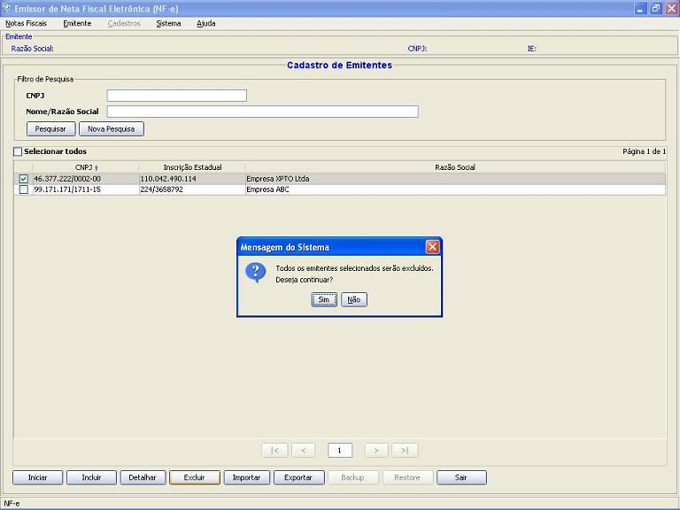
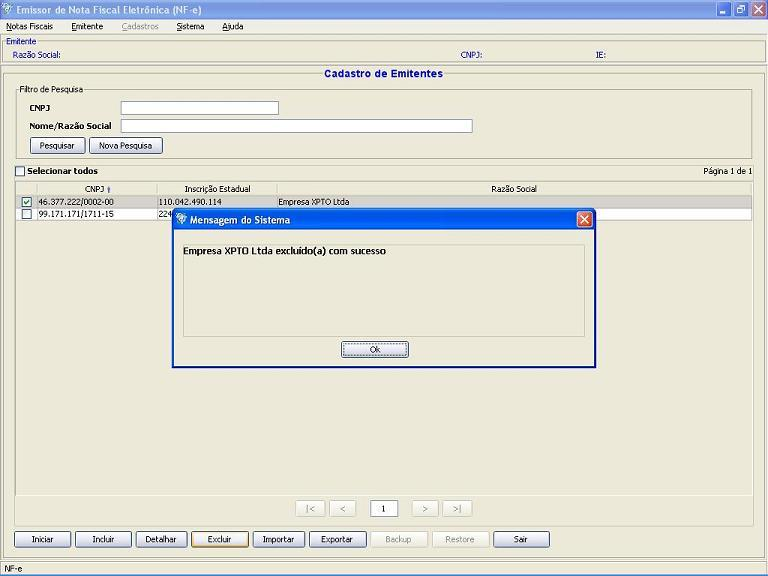

Software Emissor NF-e
Exclusão
de emitente cadastrado
Opção de exclusão de um ou mais
emitentes cadastrados.
IMPORTANTE:
A exclusão do emitente acarreta na exclusão de
TODOS os dados vinculados àquele emitente (NF-e's,
cadastros, etc)
- Acessar a tela de cadastro de
emitente através do menu Emitente
-> Selecionar Emitente ou através da
tela inicial na abertura do aplicativo
- Realizar a
pesquisa pelo(s) emitente(s) cadastrado(s) que
será(ão) excluído(s);
- Selecionar o(s)
emitente(s) a ser(em) excluído(s);
- Selecionar a
opção Excluir
- Confirmar a exclusão
Ao excluir, deve-se confirmar a remoção do emitente:

O Software informará o sucesso da operação de exclusão:
